START
0 · 开始之前（3 分钟）
三个地址，三种人
| 谁 | 去哪 | 看得到什么 |
|---|
| 任何人 | ym.jjconnect.tokyo | 官网：组织介绍 · 活动 · 文章 · 新闻 |
| 主办方（你） | /organizer/ | 主办台 —— 本手册讲的全部内容 |
| 志愿者 · 嘉宾 · 捐赠者 · 记者 | /member/ | 成员页：只看得到你发布给 TA 本人的东西 |
三个入口在官网右上角的「登录 / 加入」里也都能点到。成员之间互相看不见 —— 所有信息都只在
「你 ↔ 某一个人」之间流动。
登录状态决定你能做什么
| 状态 | 能做 | 不能做 |
|---|
| 未登录（演示模式） | 排台本、加资源、记预算 —— 全部功能都能试 | 数据只留在这台设备，换个手机就没有 |
| 已登录 · 等批准 | 同上 | 还不能云同步 |
| 已登录 · 已批准 | 云同步、记账、发邀请码、发布到官网 | — |
带「示例」两个字的都是练习数据
第一次打开时系统会铺一套示例活动、示例名册、示例模板，方便你练手。练熟之后到
资产库 页面最底下点「清除所有示例数据」，一次清干净。示例数据不会被上传到云端。
CONCEPT
1 · 设计思路
把项目管理藏进日常动作
没有甘特图，没有依赖关系，没有 WBS。一场活动 = 一页台本，台本的每一行挂着这一环节要用的
人 / 物 / 钱。你排台本的时候，任务清单就已经建好了 —— 不用再单独维护一份。
计划随时改，任务自动跟上
活动是活的：场地临时换、有人退出、临时加一个环节、日期往后挪。
这套系统的任务清单不是另存的一份 —— 台本上那张牌本身就是任务。
所以你在计划页上改什么，执行看板下一秒就是改完的样子：
| 你在计划页做的事 | 执行看板上自动发生的 |
|---|
| 加一个环节 / 挂一个人 / 加一件要做的事 | 看板上多出一件待办 |
| 删掉一行 / 拿掉一张牌 | 对应的任务跟着消失，也不再催你 |
| 换负责人 · 改日期 · 调时长 · 设截止 | 它在时间轴上的位置和提醒自己跟着走 |
| 点一下牌翻状态 | 任务当场在树上换边（进行中 → 完成） |
永远只有一份清单
不存在「计划改了、任务表忘了改」这种事，也不会出现两份对不上的进度。
按下「开始跟踪执行」之后计划照样随便改，跟踪不会重来 ——
所以你可以一边办一边调整，而看板上显示的进展始终是真实的那一份。
全程 AI 辅助，但 AI 只提议
| 在哪 | AI 做什么 |
|---|
| 票据 📷 | 拍一张領収書，自动读出金额、店名、日期、勘定科目、登録番号（T+13 位） |
| 名单 📷 | 群聊截图直接读出报名者姓名（只读名字，不抄聊天内容，不猜性别） |
| 报名表 📷 | 纸质报名表拍照 → 自动填进嘉宾资料卡 |
| 语音 🎤 | 每个输入框旁边都有话筒，说话代替打字 |
| 补写 ✨ | 环节说明、复盘小结写不出来时，点一下让 AI 起个头 |
铁律：AI 提议，人确认
识别结果一律先变成一张可以逐格改的确认卡，你点「确认」它才落账。任何情况下系统都不会自动记账。
自学习：越用越聪明
每办完一场，复盘页点一次 「保存回资产库」：这场的台本变成模板、新加的环节变成灵感、
帮过忙的人进人员库、实际价格更新收支项。下一场就是从这些东西开始，而不是从空白开始。
办得越多，铺一场新活动越快。
对内对外，一条记录追到底
志愿者的工时和贡献、嘉宾的报名和到场、捐赠者交来的票据、每一笔收支的原始凭证 ——
都挂在同一棵树上，从计划一直连到复盘和总账。
手机端优先
所有界面都是先按手机排的。活动当天你拿着手机就能签到、记时间、拍票据；
只有执行看板（时间树）和总账在电脑上信息更密一些。
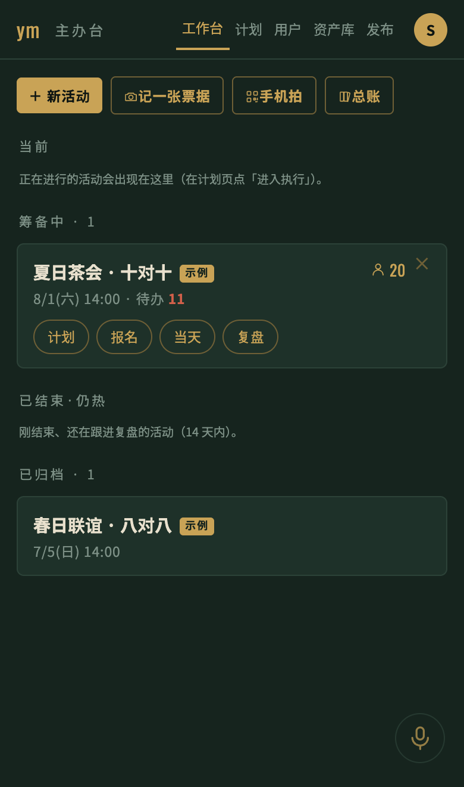
工作台 —— 打开 app 的第一屏。活动按「当前 / 筹备中 / 已结束·仍热 / 已归档」自动分组，
顶部四个常用动作：新活动 · 记一张票据 · 手机拍 · 总账。
CORE
2 · 核心界面：计划 → 执行
整套系统只有两个真正的核心页面：计划页（把人、物、钱部署到台本上）和
执行看板（一览所有事情的状态，点一下翻转）。其余页面都是围着这两个转。
2.1 计划页 —— 任务与资源部署
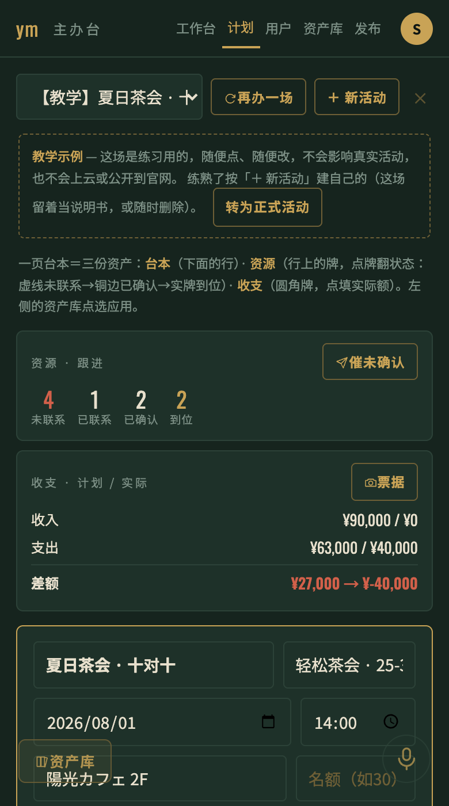
计划页顶部三块：资源汇总条（未联系 / 已联系 / 已确认 / 到位 四个数字）、
收支条（收入 · 支出 · 差额，计划 → 实际）、活动信息（名称 / 日期 / 场地 / 名额 / 是否公开到官网）。
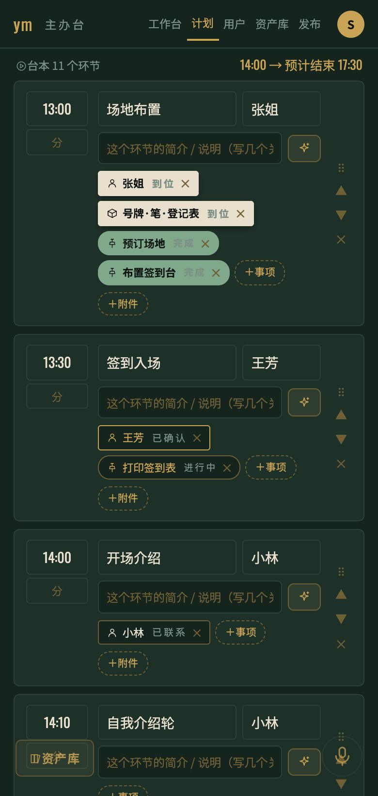
台本 —— 一行 = 一个环节：时间 · 环节名 · 负责人 · 说明。
下面挂着这一环节要用的资源胶囊（人 / 物）、收支胶囊（钱）、事项（要做的事）和附件。
往台本上加东西的三种方式：
- 从资产库点 — 左侧「资产库」按钮打开面板，点一个模板铺满整份台本，点一个灵感插一行环节，点一个人 / 物 / 收支项挂成胶囊。
- 直接写 — 在行上直接输入新名字，系统自动建记录。
- 说 — 点输入框旁边的 🎤，说话转文字。
2.2 执行看板 —— 一览与状态翻转
计划页点 「计划好了 · 开始跟踪执行」，这场活动就进入执行阶段，进入时间树：
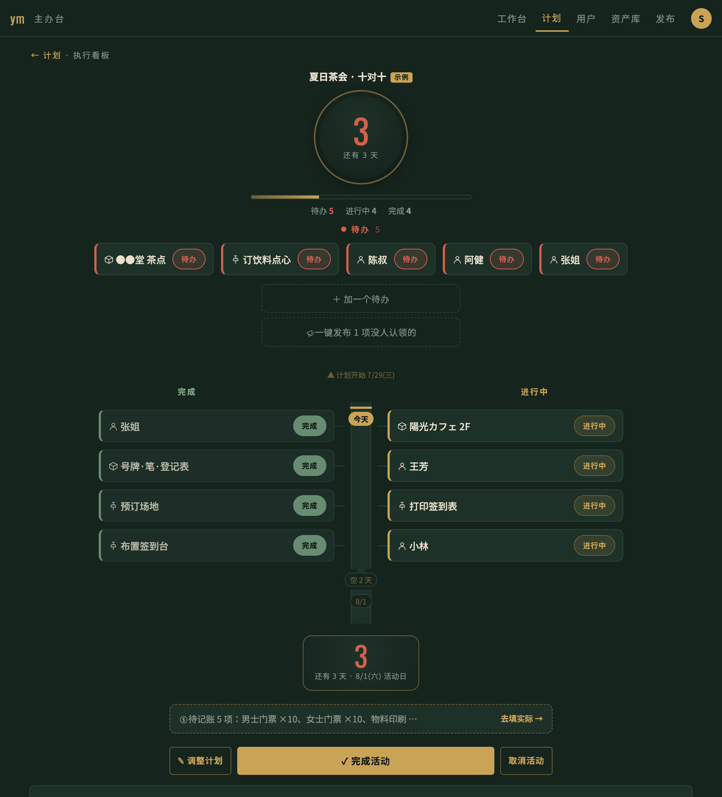
执行看板（电脑）。树干是一条竖着的时间轴：顶端＝计划开始日，树根＝活动日，
「今天」每过一天下移一格。左边是完成，右边是进行中，每件事停在它自己的那一天；
顶上的冠层是待办（还没开始 / 还没人接）。中间空白的日子会收成「空 N 天」，不占地方。
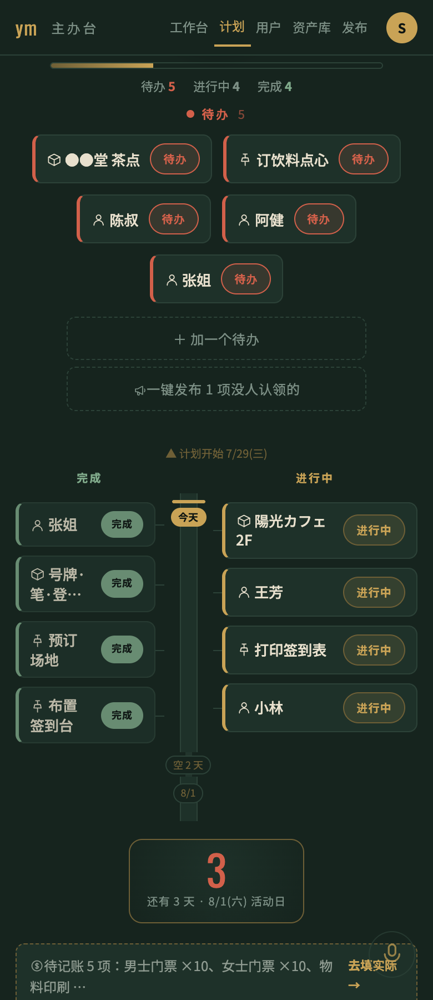
手机上同一棵树竖着排开，一屏能看完全部进度。
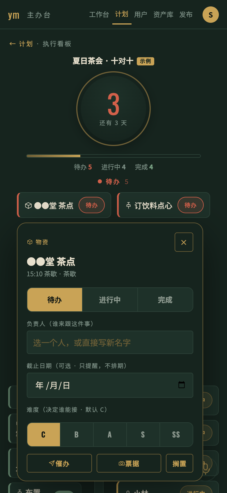
点任何一件事都会弹出这张卡：三态翻转、负责人、截止、难度、催办、票据、搁置。
状态怎么翻
资源（人 / 物）有四个状态，事项有三个状态，在看板上统一成三段显示：
| 资源胶囊（人 / 物） | 看板上的位置 | 意思 |
|---|
| 未联系 | 待办（顶上） | 还没开口问 |
| 已联系 · 已确认 | 进行中（右侧） | 问了 / 对方答应了，东西还没到位 |
| 到位 | 完成（左侧） | 人来了 / 东西拿到了 —— 这一件不用再管 |
翻转有两种点法：在计划页直接点胶囊循环切换，或者在看板上点开这张卡选一段。
一件事做完，它会在它完成的那一天从右边滑到左边 —— 树的左半边就是「什么时候做完了什么」的记录。
随时回去改计划
开始跟踪之后，计划页不会被锁上。两个入口随时来回走：
- 计划页顶上变成 ● 执行跟踪中，旁边一个 ▶ 执行看板 按钮 —— 台本照样可以增删改。
- 执行看板底部有 ✎ 调整计划，一点就回到计划页。
- 活动当天也一样 —— 「当天」页左上角的 ← 计划 一步就回得去，
顺序、时长现场随便调（见 §3 阶段三）。
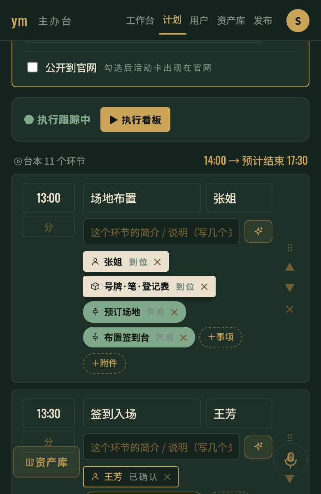
已经在跟踪的活动，计划页长这样 —— ● 执行跟踪中 只是一个状态标记，
下面的台本、资源、收支全部照常可改。改完不用做任何同步，看板自己就对了。
看板底部另外两个按钮是 ✓ 完成活动 和 取消活动 —— 只有这两个才会改变活动的阶段，
改计划不会。
截止日期只提醒，不排期
给一件事设截止后，它会被钉在树干上那一天，临近变黄、过期变红并浮到最上面，还能一键 📤 催办。
但系统永远不会因为一个截止去改活动日期或挡住别的事 —— 排期是你的判断，不是软件的。
WORKFLOW
3 · 主办工作流程（四个阶段）
你完整的一圈是：构思 → 策划 → 任务 → 资源 → 发布 → 领任务 → 追踪 → 完成 → 更新 → 复盘。
在界面上，这一圈落在四个阶段里：
PHASE 1
策划
构思 → 铺台本 → 挂人物钱。在计划页完成。
PHASE 2
筹备
派活 → 发布 → 领任务 → 追踪催办 → 收报名。在执行看板完成。
PHASE 3
当日
签到 → 跑台本 → 记实际时间 → 现场记账，顺序和时长随时改。在当天页完成。
PHASE 4
复盘
对账 → 记工时评价 → 写小结 → 保存回资产库 → 再办一场。
工作台上每张活动卡下面的四个胶囊 计划
报名 当天 复盘
就是这四个阶段的入口，随时可以来回跳。
阶段一 · 策划
- 新建活动 — 工作台点「＋ 新活动」，或者在资产库点一个模板直接铺满整份台本。
- 填活动信息 — 名称、副题、日期、时间、场地、名额。
- 排环节 — 每行填时间、环节名、负责人；说明写不出来点 ✨ 让 AI 起个头。环节可以拖动排序，时刻会自动往下顺延。
- 挂资源和钱 — 从资产库点人、点物资、点收支项，挂到对应的环节上；全场性的东西（场地、门票、保险）挂在最上面的活动信息卡上。
- 加要做的事 — 点「＋事项」加上打电话确认场地、印名牌这类杂事，它们也会进执行看板。
阶段二 · 筹备
- 开始跟踪执行 — 计划页点「计划好了 · 开始跟踪执行」，计划就变成会自己提醒你的执行看板。
之后计划照样随便改，跟踪不会重来（见 §2.2）。
- 派活 — 在执行看板点开一件事，写上负责人（从名册选或直接写名字）、设难度、设截止。
- 发布没人认领的 — 看板顶部有「一键发布 N 项没人认领的」，发出去让志愿者自己抢。
- 追踪与催办 — 每天打开看板看「今天」这一横线：上面是已经过去的，下面是还剩的天数。过期的事会自己浮到最上面变红，点 📤 催办一键发提醒。
- 收报名 — 活动卡上的「报名」胶囊进报名页（详见 §8 嘉宾管理）。
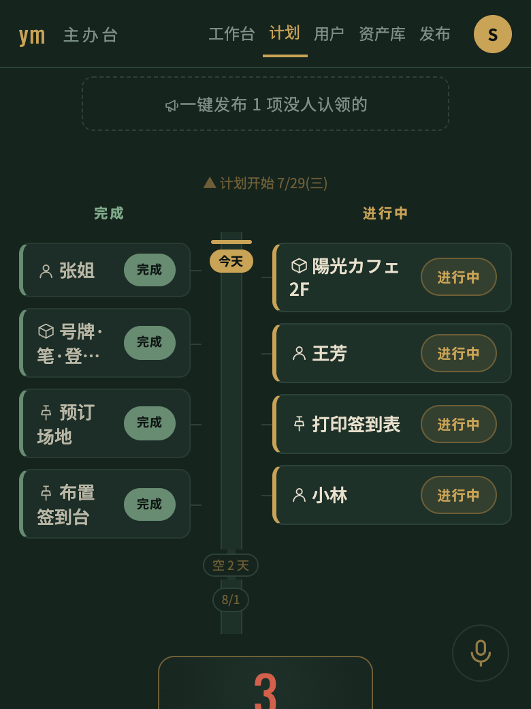
「一键发布 N 项没人认领的」—— 发布之后这些任务会出现在志愿者各自的页面上，先点先得。
阶段三 · 当日
活动卡上点「当天」，三个标签页：看板 · 台本 · 记录。
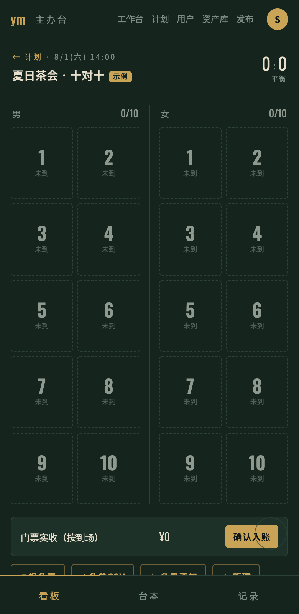
看板 —— 男女两栏号牌，点一下签到、再点撤销，不弹确认框。
右上角实时显示男女比例，差距大了会报红。下面「门票实收（按到场）」按实际到场人数算，点「确认入账」进总账。
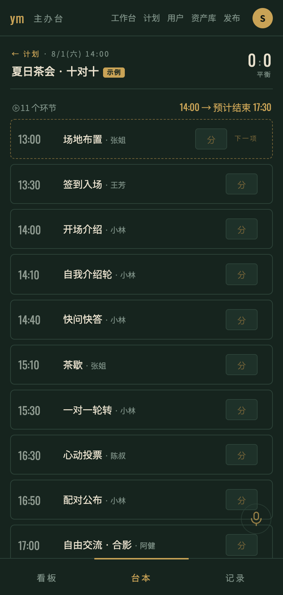
台本 —— 高亮当前和下一个环节，点一行就把实际时间记下来（再点撤销）。
每行右边那个 「分」 就是时长，当场改、后面的时刻自动顺延；
左上角 ← 计划 一步回计划页调顺序。
当天照样能改顺序和时长 —— 这条对现场最要紧
现场永远不按计划走：上一个环节拖了、嘉宾还没到齐、临时想把茶歇提前。
台本不是活动当天就冻结的东西：
| 要改什么 | 在哪改 | 改完发生什么 |
|---|
| 时长 | 就在「当天 → 台本」这一页，直接改那一行的「分」 |
后面每一行的时刻和顶上的「预计结束」立刻自动顺延 |
| 顺序 | 点左上角 ← 计划 回计划页，按住 ⠿ 拖，或点 ▲ ▼ |
回到「当天」，台本已经是新顺序，时刻也已经重排好 —— 两边本来就是同一份，
不用保存、不用同步 |
| 加 / 删环节 | 同上，在计划页加行删行 |
当天台本和执行看板同时跟着变 |
顺序一改，时刻自己重排 —— 你不用管
第一次调顺序时，系统会把你手填的时刻换算成时长，并提示一句
「时刻已改成按时长自动顺延」。换算的那一刻，屏幕上的时刻一个都不会变；
变的是从此以后 —— 每个环节带着自己的长度走。
举个例：把 20 分钟的茶歇提到 30 分钟的快问快答前面，两段各自按自己的长度排，
后面的环节自动往前挪 10 分钟，时刻永远是升序的，不会串位。
整场的开始时刻留在第一行：就算你把第一个环节换掉，台本还是从原来那个点开始。
想把某一段钉在某个时刻（比如场地只能 15:30 进），随时在那一行重新填一个时刻 ——
它就是新的锚点，从那里往下重新排。下次再调顺序时它会同样被换算成时长（时刻照样不变），
所以「钉」是当下有效，不是永久锁定。
已经点过的实际开始时间不受影响；计划时刻也不会被改掉 ——
复盘页那份「计划 → 实际」的对照，看的就是这两者的差距。
当天要记账，用页面上的 📷 拍票据，或者顶部「记一张票据」。记录标签页放的是当天临时的记录和附件。
阶段四 · 复盘
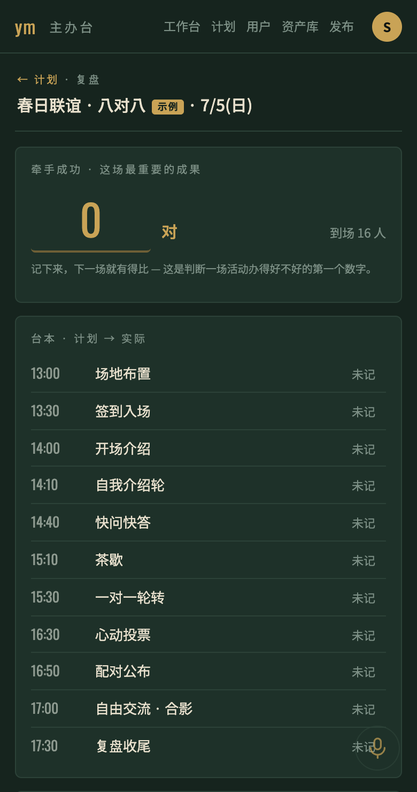
复盘 —— 最上面是这场最重要的成果（牵手成功几对）；往下是台本
计划 → 实际 的时间对照、收支 预算 → 实际 的对账、到场人数。
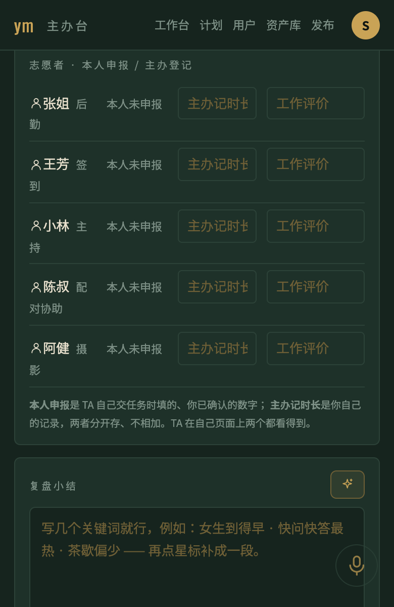
志愿者 —— 左边是 TA 自己交任务时报的工时，右边是你登记的工时和工作评价。
两栏分开、不相加，TA 在自己页面上两个都看得到。
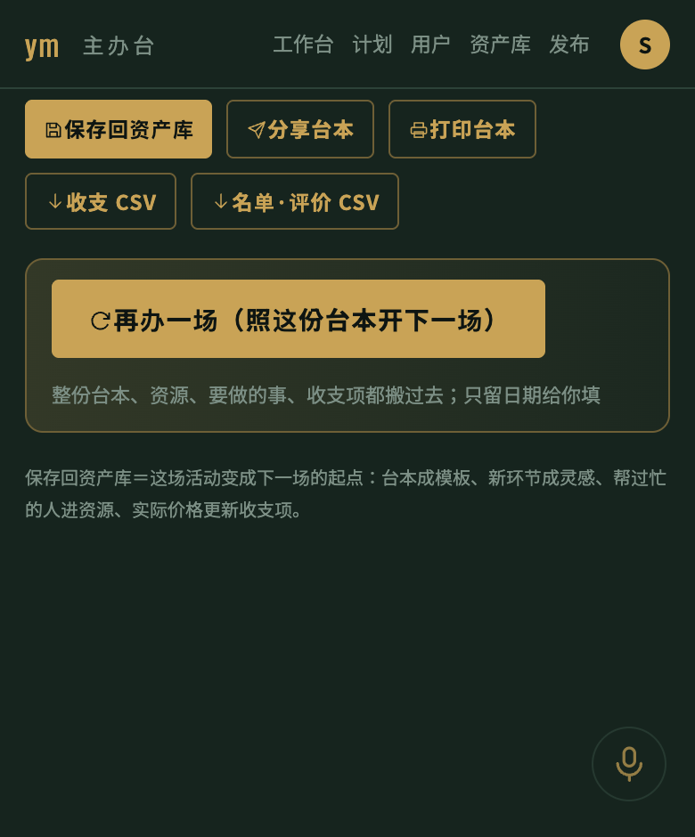
保存回资产库＝这场变成下一场的起点。再办一场＝整份台本、资源、事项、
收支项全搬过去，只留日期给你填。
复盘页还能导出：台本打印 / 分享、收支 CSV、名单·评价 CSV。忘了记的票据用「补一张票据」补录。
LIBRARY
4 · 模板与资源库 · 人员注册
资产库有五个标签，每办一场就长一点。这是整套系统「自学习」的地方 ——
它不是设置页，是你的积累。
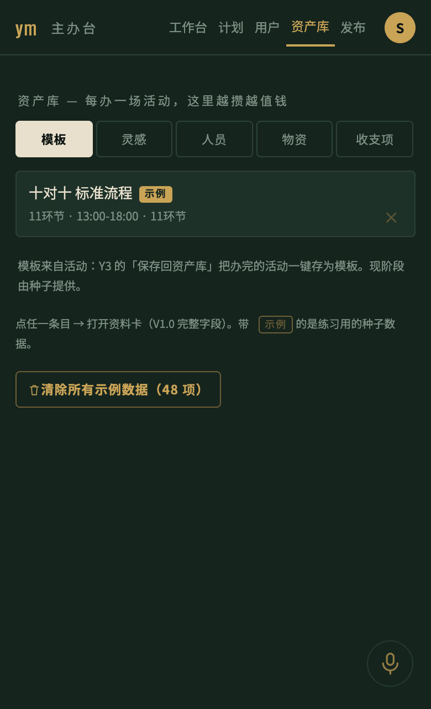
模板 —— 整场活动的台本（十对十、八对八…）。点一下铺满一份新台本。
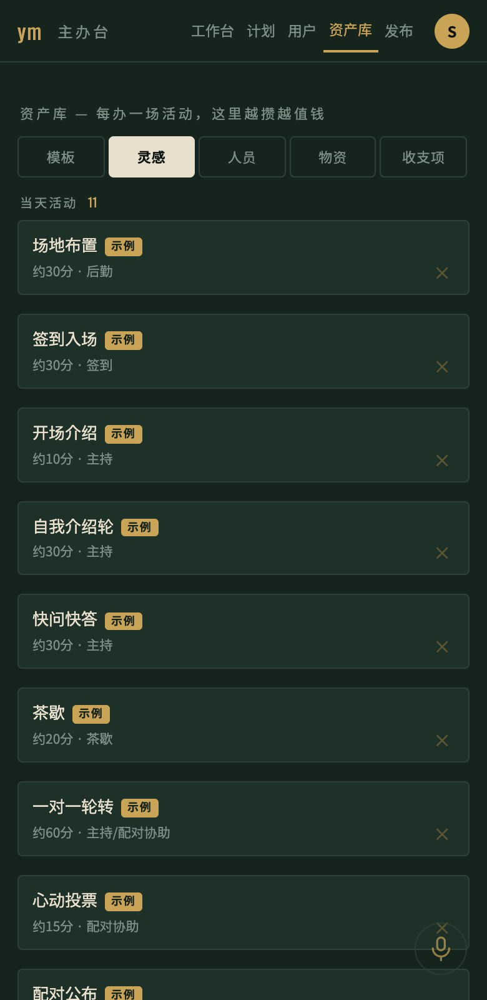
灵感 —— 单个环节（自我介绍轮、快问快答、交换联系…），带典型时长和常用资源，分四类。
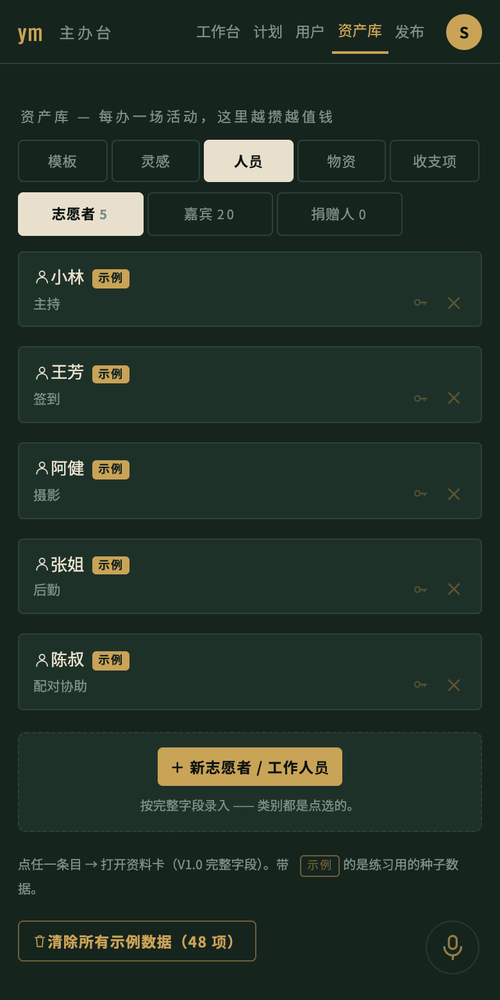
人员 —— 三个子类：志愿者 · 嘉宾 · 捐赠人。点一条打开完整资料卡。
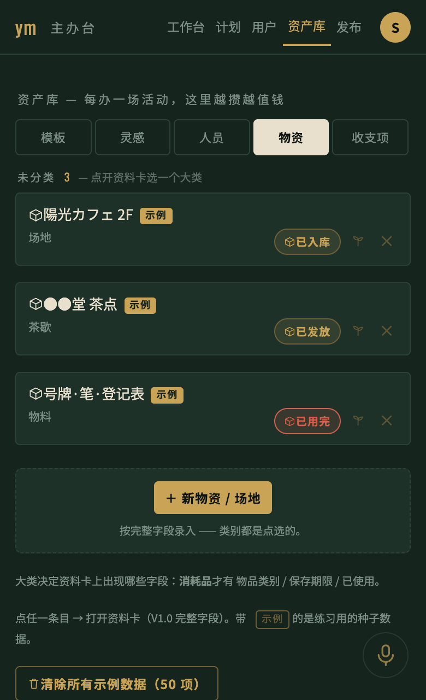
物资 —— 场地、物料、消耗品。右边那颗胶囊是库存状态，点一下循环切换。
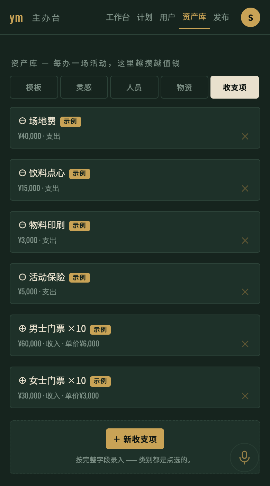
收支项 —— 常用的费用和收入项（场地费、饮料、门票…），带典型价格和单价。
任务模板怎么来的
你不用单独维护任务模板。台本里每个环节挂的「事项」会跟着台本一起被保存回模板 ——
下次用同一个环节，同样的事项自动重新出现（已搁置的不会跟来，状态会重置）。
人员注册：发一串邀请码就行
你不需要知道对方的邮箱。你发码，TA 自己注册，邮箱和密码由 TA 自己填。
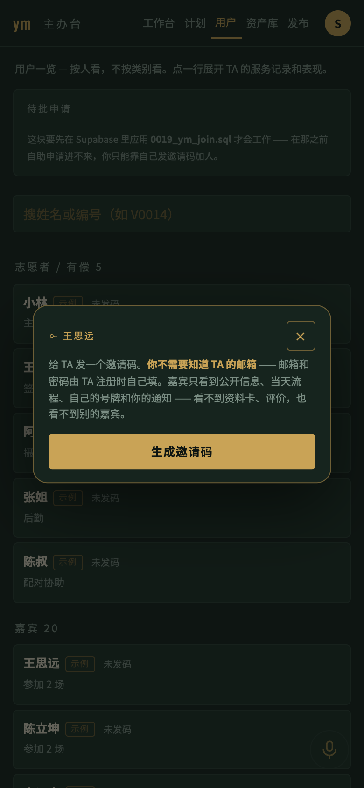
在名册里点一个人 → 🔑 → 选身份 → 「生成邀请码」。
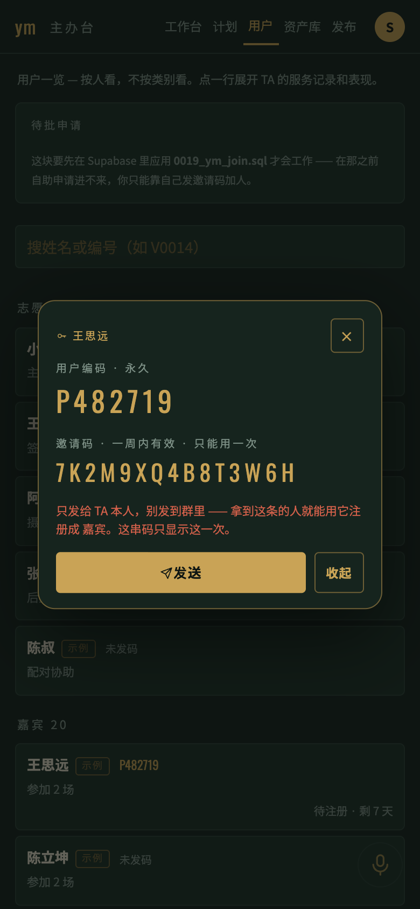
生成后同时给出用户编码（永久）和邀请码（一周有效、只能用一次）。
点「发送」用微信 / LINE 发给 TA 本人。
- 你 — 资产库 → 人员 → 点一个人 → 🔑 → 生成邀请码 → 发送给 TA。
- TA — 打开
ym.jjconnect.tokyo/member/，点「我有邀请码，还没注册」，
输入邀请码 + 自己的邮箱 + 自设密码。
- 完成 — 邀请码当场作废，用户编码永久留在 TA 的记录上，并自动归到你名下。
以后 TA 用邮箱 + 密码登录。
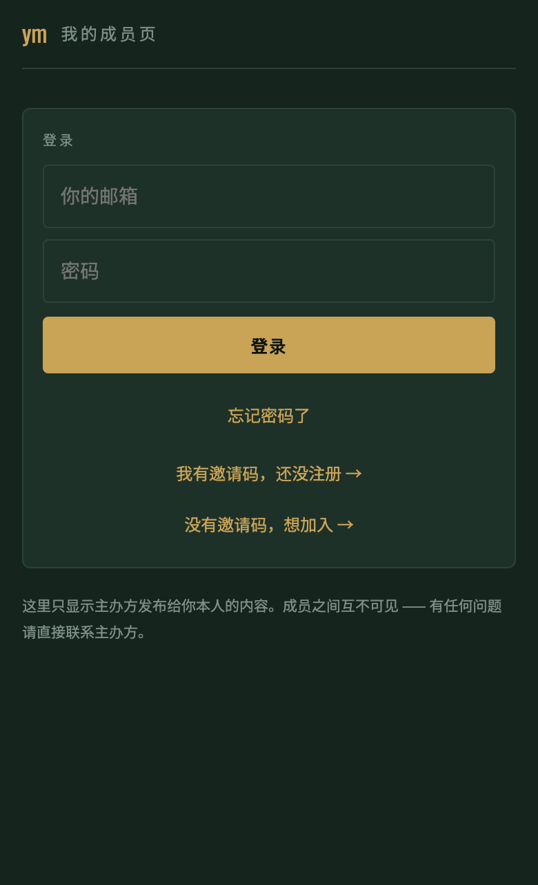
成员页 /member/ —— TA 看到的入口。忘记密码可以自己重设，不用找你。
用户编码：位数就是身份
| 编码 | 身份 | 谁能发 |
|---|
H001 | 主办者 | 只有平台管理员 |
V0014 | 志愿者 | 你 |
V0014N | 有偿服务者（拿报酬的） | 你 |
P482719 | 嘉宾（6 位随机） | 你 |
D0007 | 捐赠者 | 你 |
O003 | 记者 / 旁观 | 你 |
嘉宾编码为什么是随机的
其他身份按顺序编号，嘉宾故意用 6 位随机数 —— 顺序号会泄露「这家一共来过多少嘉宾」
和「这个人大概什么时候来的」，对相亲活动的参加者是真实的隐私。
邀请码只发给 TA 本人
拿到这串码的人就能用它注册成对应身份。不要发到群里。码只显示这一次；
发漏了用「重发邀请码」拿新的（旧的立刻作废，编号不变）。
物资和账务登记
物资在资产库 → 物资；账务（收支项）在资产库 → 收支项。
物资分消耗品和可存续品两类，消耗品才有类别 / 保存期限 / 价值 / 已使用这些字段。
库存状态见 §6 捐助管理。
VOLUNTEER
5 · 志愿者系统
两种派活方式
| 怎么做 | 什么时候用 |
|---|
| 直接指定 | 在执行看板点开一件事，填负责人 | 大部分情况 |
| 发布抢单 | 看板上点「一键发布 N 项没人认领的」 | 你也不知道该派给谁的时候 |
发布出去的任务会出现在志愿者各自的页面上（没有公共看板），先点先得 ——
第一个点「接任务」的人拿到，后点的人看到「该任务已经被领取」，而且看不到是谁领走的。
赢的人还要等你点一次「确认指派」才真正归 TA。
难度与星级
每件事可以点选难度 C · B · A · S · SS（默认 C）；每个志愿者有一个你授予的星级。
难度高于本人星级的任务接不了 —— 界面上照样显示，但锁着（🔒 需 S 级）。
藏起来只会让人以为没任务，锁住才有升级的动力。
交任务 → 确认 / 退回
- TA 交 — 志愿者在自己那条任务上填工时 / 自费 / 简短说明，可以传票据和附件，然后点「交任务」。
- 卡片左移显示「交付」 — 虚线，区别于实线的「完成」。这只是投影：真正的状态还没变。
- 你确认 — 打开看到工时、自费、说明、票据 → 点「确认完成」，状态才翻到完成。
- 或者退回 — 点「退回」并必须写清楚原因。TA 那边显示「该任务未被确认，需要您跟进」，点开看你的反馈，改好再交一次。
贡献与等级
志愿者在自己页面底部能看到：完成件数 · 累计工时 · 累计自费 · 主办的感谢 · 服务经历。
数据来自你已确认的交付，加上你在复盘里登记的工时。
工时不重复计算
本人申报（TA 自己交任务时填的、你确认过的数字）和主办登记（你在复盘里填的）
分开显示、不相加。TA 在自己页面上两个都看得到。
自费不进收支，也不进总账
志愿者自己掏钱买的东西，是贡献记录，不是你的账目 —— 它不参与活动差额，不进总账，也不出现在任何导出的 CSV 里。
需要你报销的，在票据确认卡上选「主办报销」。
DONATION
6 · 捐助管理
登记捐赠人
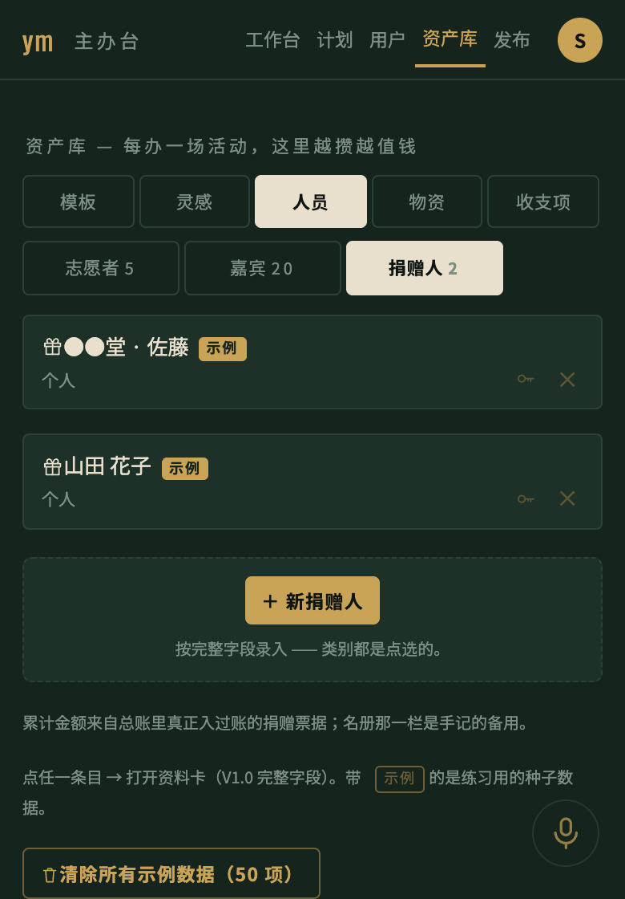
资产库 → 人员 → 捐赠人。点 🔑 给 TA 发邀请码（身份 D），
TA 就能自己把票据交到你这里。
捐赠票据入账
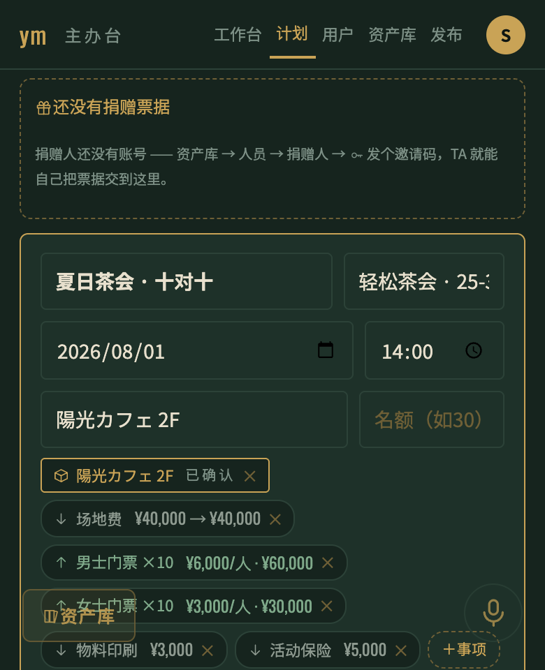
捐赠人交来的票据会出现在计划页上的这一块。点「入账」→ 确认卡 → 进总账，
科目记受取寄付金。捐赠人自己那一行会变成「✓ 主办方已收讫入账」。
捐赠人的写入面是最小的
捐赠者只能交票据，看不到任务、看不到名册、看不到别人。这一块空着的时候也会露一行，
告诉你差哪一步（比如「捐赠人还没有账号」）。
物资入库 · 库存 · 消耗
物资的库存就是一颗胶囊、四个状态，点一下循环切换 —— 不是一套进销存：
待入库 →
已入库 →
已发放 →
已用完
状态在资产库 → 物资的列表上直接点（见上面 §4 的物资截图），也在物资资料卡里。
捐赠来的物资就是登记成一条物资记录，关联到捐赠人。
MONEY
7 · 收入 / 开支管理
目前只记账，不收款
系统
不代收门票、不处理支付。门票金额、报名费都只是
记录，钱怎么收由你线下决定。
在线收费属于
规划中的功能。
记一张票据：拍照 → 识别 → 确认
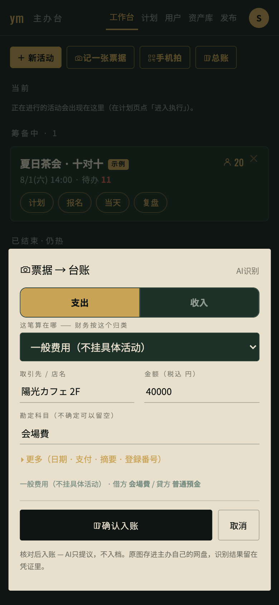
拍完票据弹出的确认卡：支出 / 收入、这笔算在哪场活动、取引先、金额（税込）、勘定科目。
展开「更多」还有日期 · 支付方式 · 摘要 · 登録番号。核对完点「确认入账」才落账。
能拍票据的地方：
- 工作台顶部「记一张票据」—— 随时录入，会当面问你「这笔算在哪」
- 计划页的收支胶囊 —— 已经知道算在哪场、哪一项
- 执行看板点开任务 → 票据 —— 凭证挂在这件事下面
- 复盘页「补一张票据」—— 事后补录
- 志愿者 / 捐赠者交来的 —— 你点「入账」转成正式账目
在电脑上也能「手机拍」
票在手里、相机在手机上。工作台点「手机拍」 → 出现二维码 → 手机扫（不用登录）→ 拍 →
自动传回电脑弹出确认卡。可以连着拍，一张一张确认；二维码 10 分钟过期。
总账
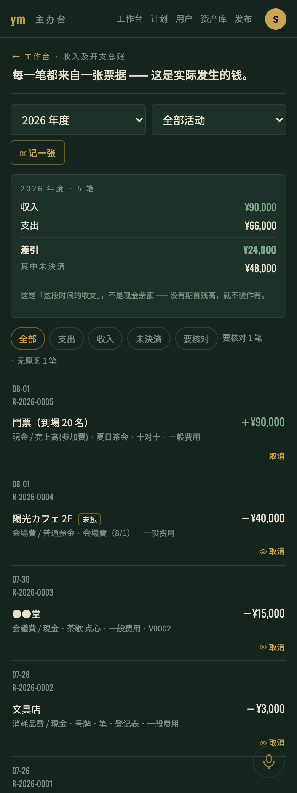
总账 —— 每一笔都来自一张票据。可按年度和活动筛选，
标签切换 全部 / 支出 / 收入 / 未決済 / 要核对。
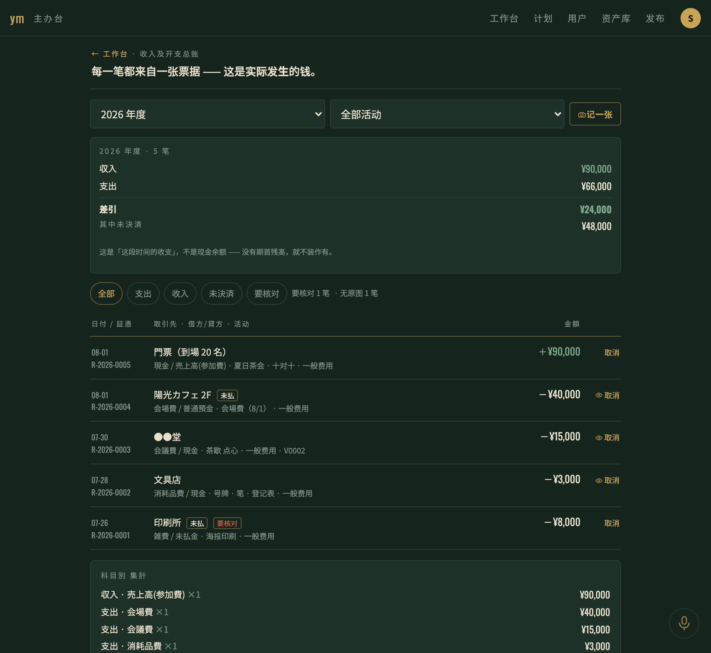
电脑上一屏能看到更多行，下面还有科目別集計。
导出两份 CSV：総勘定元帳（自己看的帳簿）和仕訳 CSV（给税理士的）。
几条要记住的规矩
| 规矩 | 为什么 |
|---|
| 金额一律按税込记 | 税务判断交给税理士。系统不猜税率 —— 票面上读不到的就空着，绝不推算。 |
| 取消不删行 | 记错了在总账里点「取消」并写理由，行会留着划掉。删掉的账是查不回来的。 |
| 「要核对」标记 | 识别服务没响应、或者没写勘定科目的行会打上这个标记。清完再导出。 |
| 未決済单列 | 振込 / クレジット 没填决済日的，作为未払 / 未収另外列出来。 |
| 门票只记一次 | 已经单独交过报名费的人，不会再被门票汇总算一遍。 |
原件存在你自己的网盘
票据原图上传到沙龙自己的 Google Drive（按「活动 · 日期 / 票据·报名表·名单·附件」分文件夹），
系统只存链接。拍错的票据请到 Drive 里手动删 —— 系统没有删除权限，这是有意的。
GUEST
8 · 嘉宾管理
邀请码与嘉宾一一对应
做法和 §4 人员注册 完全一样：你在名册里建一条嘉宾记录 → 发一串邀请码 → TA 自己注册。
注册成功后这个账号就和名册里那条记录绑定，编码 P + 6 位随机数。
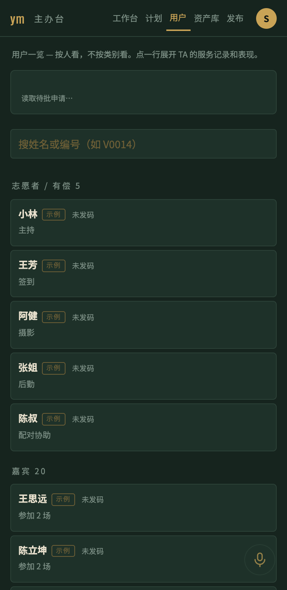
用户页 —— 按人看，不按类别看。可以搜姓名或编号，点一行展开 TA 的服务记录和表现，
看得到「归属主办 · 来源（邀请码 / 自助申请）· 已注册时间」。
嘉宾能看到什么、能做什么
| 看得到 | 看不到 |
|---|
| 公开活动信息 | 自己的资料卡（职业 / 年龄 / 联系方式 / 评价 / 择偶条件） |
| 当天流程（只有时间和环节名） | 环节说明（那是给志愿者的操作指示） |
| 自己的号牌 | 其他任何嘉宾、任何志愿者 |
| 主办方通知 | 钱、名册、评价 |
嘉宾不需要提交隐私资料
嘉宾账号不是一个「查看我自己的档案」的窗口 —— TA 注册只需要邮箱和密码。
资料是你填、只有你看得到的。系统不替你管理嘉宾隐私，这份责任在沙龙这边。
浏览与报名
- 公开到官网 — 计划页勾上「公开到官网」，这场活动才会出现在官网上、才收得到报名。
- TA 报名 — 有账号的嘉宾在自己页面上看到这场活动，点「我想参加」。
- 你确认 — 报名页的「待确认」里点同意 → 系统自动建记录、发号牌。
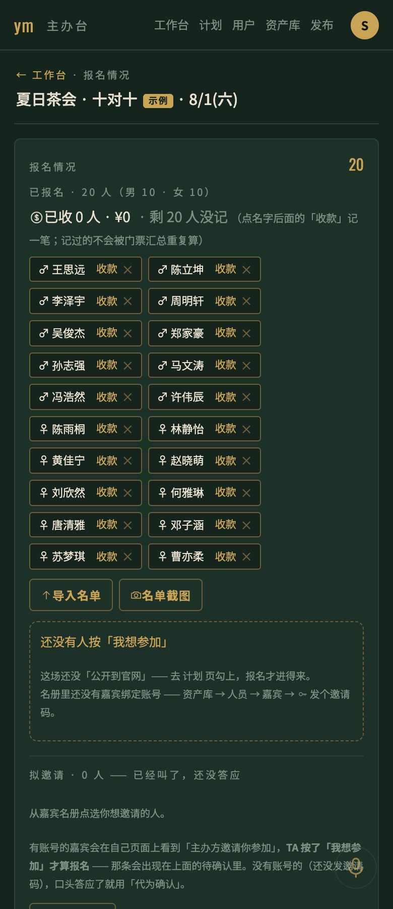
报名情况 —— 上半是「已报名」（含男女人数），下半是「拟邀请」。
空着的时候也会告诉你差哪一步（没公开到官网 / 名册里还没有嘉宾绑定账号）。
拟邀请 ≠ 报名
你从名册点选的人只是「已经叫了，还没答应」。有账号的嘉宾看到「主办方邀请你参加」，
TA 按了「我想参加」才算报名。口头答应了的（还没发邀请码的）用「代为确认」由你替 TA 确认。
上载报名清单
报名页和当天签到板上都有两个导入入口：
- ⬆ 导入名单 / 名单 CSV — Excel 另存为 CSV 直接传。
- 📷 名单截图 — 群聊截图拍/传上去，AI 自动读出姓名。
它不会抄聊天内容、时间、群名，也不会猜性别 —— 性别显示成灰色的
♂?，等你点一下确认。
两条路进的都是同一张确认清单，你逐个核对之后才落进名册。
PUBLIC
9 · 公共网页 · 新闻 · 内容发布
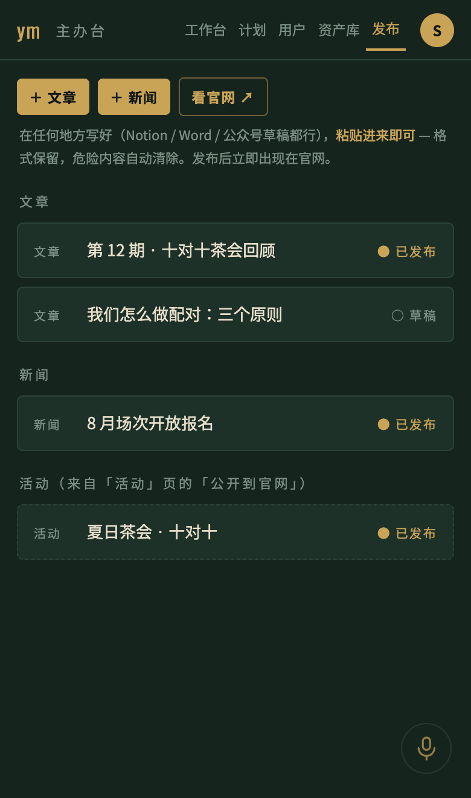
发布页 —— 三类内容：文章、新闻，以及从活动页「公开到官网」自动生成的活动卡。
每条都标着「● 已发布 / ○ 草稿」。
- 在哪写都行 — Notion、Word、公众号草稿都可以，写好直接粘贴进来。格式会保留，危险内容自动清除。
- 存草稿或直接发布 — 发布后立即出现在官网上。
- 活动卡不用单独写 — 在计划页勾「公开到官网」，活动卡自己就出现了，内容跟着活动走。
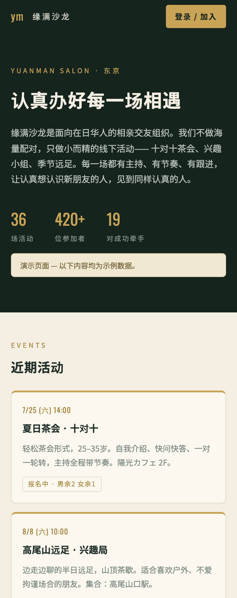
官网 ym.jjconnect.tokyo —— 组织介绍 · 近期活动 · 文章 · 新闻。
右上角「登录 / 加入」按身份分成四个入口，点错门的人不会排错队。
ROADMAP
10 · 扩展功能 规划中 · 暂未开放
以下功能目前系统里没有，界面上也找不到入口。写在这里是为了让你知道边界在哪，
不用到处找按钮。
| 功能 | 现在的替代做法 |
|---|
界面美化
主题、配色、品牌化 |
目前是固定的一套深色主办台 + 浅色官网。 |
收费系统
在线收门票 / 报名费 / 捐款 |
系统只记账。钱线下收，收到之后拍票据或手工记一笔（见 §7）。 |
SNS 交互
自动发帖、评论、粉丝互动 |
现在用系统里的「分享」按钮，走手机自带的微信 / LINE 分享面板，手动发。 |
内容制作与发布高级功能
排版模板、定时发布、多渠道分发 |
现在是「在别处写好 → 粘贴进来 → 发布」（见 §9）。 |
想调整这几项的优先次序，直接跟开发说一声就行 —— 顺序还没定。
FAQ
11 · 常见问题
忘记密码了
主办台和成员页的登录框下面都有「忘记密码了」。填邮箱 → 收信 → 点信里的链接 → 直接设新密码。
成员忘记密码不用找你，自己就能重设。
为什么总账 / 发布 / 发邀请码点不动
这三样都要登录且账号已通过批准。点右上角头像登录；还在等批准时头像会变成一个等待中的图标。
没登录时其余功能照常可用，只是数据只留在这台设备上。
到处都是「示例」两个字
那是练习用的种子数据，不会上传到云端，也不会算进任何统计。练熟之后到
资产库页面最底下点「清除所有示例数据」，一次清干净。
换了手机 / 换了电脑，东西不见了
没登录的时候数据只在本机。登录并通过批准之后会自动云同步，换设备登录同一个账号就都回来了。
「已结束 · 仍热」是什么
活动结束后 14 天内的那一档 —— 还在跟进复盘、补票据的阶段。过了 14 天自动进「已归档」，
归档的活动打开是只读的。
手机上看不清执行树
手机上树是竖着排开的，功能一样。要看完整的左右两侧 + 时间轴那种视图，用电脑打开。
↑ 回到顶部